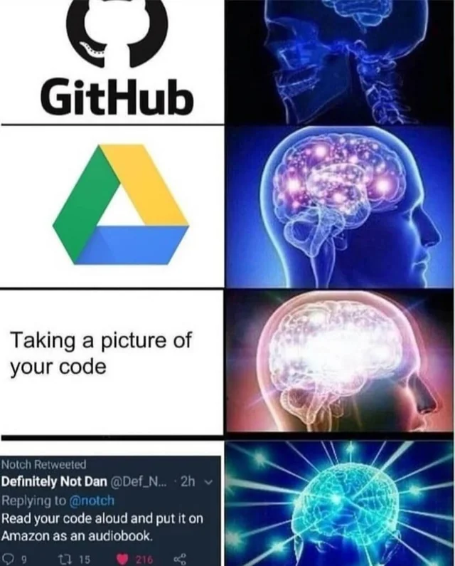
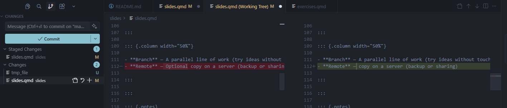

Git for Research
Version control for your research
2026-02-08
Welcome - Git workshop for labmates
We’ll focus on a single code writer.
Today:
- Why version control? (And why not just Drive or the cluster?)
- Git basics: the daily workflow and key commands
- Hands-on: we do it together on your machine
- We’ll keep it simple and not technical today.
Why backup?
Why backup matters: Your code is a research output
- Like your data, it can’t be easily restored if you lose it (laptop failure, theft, accidental overwrite).
- Scripts, pipelines, and analysis code are irreplaceable.
- Backing them up (e.g. push to GitHub/GitLab) gives you a safe copy and peace of mind.

Why version control?
Importance of version control
- Lost track of changes — Which script was the one that worked? Which draft had that result?
- Naming chaos —
thesis_final_v2_FINAL.docx,analysis_old_backup.R - Can’t reproduce — What exactly changed between last week and today?
- Goal: One place. Full history. Every change with a reason (commit message).
Experiment with code — see the difference
When you try things (new parameters, a different method, a refactor):
- Git keeps a clear before (your last commit).
- You can always see exactly what changed —
git diffshows every line added or removed. - If the experiment goes wrong, you know precisely what to undo or revert to.
- No more “what did I change?” — the diff is the answer.


Why not Drive / shared folder / cluster only?
| Tool | Limitation |
|---|---|
| Drive / Dropbox | No real history — only “versions” and sync. Conflicts when two copies change. No “why” for each change. |
| Cluster / shared disk | Same: no per-file history, no clear snapshots. You still end up with run_v1.sh, run_v2.sh. |
| Git | History + messages for every snapshot. Works offline on your laptop, then sync to cluster or server. One workflow everywhere. |
Why Git specifically?
- Free, works on your laptop, cluster, and server
- Standard in research and software — papers, code, data pipelines
- Offline-first — Commit locally, push to GitHub/GitLab later for backup or sharing
- Today we focus on you, one machine; remote/backup is at the end
What is Git?
Git = tool that keeps a history of changes in a folder (a repository).
- Repository (repo) — The folder Git tracks
- Commit — A saved snapshot + a message (who, when, why)
- History — Chain of commits; you can compare or restore any point
- Branch — A parallel line of work (try ideas without touching main)
- Remote — copy on a server (backup or sharing)
Concepts in one picture
commit A commit B commit C
● --------- ● --------- ● ← main branch
\
● --- ● ← feature branch
D EEach ● is a snapshot. Branches let you try things without breaking the main line.
Setup (1/2) — Install Git
Check if Git is installed:
If not: git-scm.com — use default options.
Windows
Use “Git Bash” for the terminal in this workshop (same commands as Mac/Linux).
Setup (2/2) — Tell Git who you are
One-time per machine:
Use the same email as on GitHub/GitLab if you use them.
New project: init or clone
Start from scratch (new folder, new repo):
Start from an existing repo (e.g. GitHub, GitLab, a colleague’s copy):
git init— Git starts tracking the current folder; you make the first commit.git clone— You get a full copy (history included); you’re ready to work and push back if there’s a remote.
Basic workflow — The loop
Every time you finish a small, logical change:
- Stage — Choose what goes in the next snapshot:
git add - Commit — Save that snapshot with a message:
git commit -m "message" - Repeat.
Golden rule
You never commit without staging first. Stage (add) → Commit. Every time.
Basic workflow — Status and history
| What you want | Command |
|---|---|
| What changed? (files) | git status |
| Short status | git status -s |
| List of commits | git log |
| One line per commit | git log --oneline |
Run git status often. It tells you what’s modified, staged, or untracked.
Tracked vs untracked — Reading git status
Tracked — Git already knows the file (it was in the last commit or you ran git add). Git shows changes: modified, staged, or clean.
Untracked — The file is in the folder but Git is not tracking it yet. It won’t be in the next commit until you git add it.
git status groups files into:
- Changes to be committed (staged) — will be in the next commit
- Changes not staged for commit — modified but not staged
- Untracked files — not in the repo yet
Reading git status — Example

Example of git status output
Basic workflow — Stage and commit
| What you do | Command |
|---|---|
| Stage one file | git add <filename> |
| Stage all changes | git add . |
| Commit with message | git commit -m "Add results for experiment 1" |
Good messages: short, present tense, why (“Fix threshold in step 2” not “changes”).
Good commit messages — structure and why it matters
Structure:
- Subject line — One short line (≈50 chars), imperative mood: “Add …”, “Fix …”, “Update …”.
- Optional body — What changed and why; blank line after the subject. Use when the change needs context.
Why it matters: Good messages make git log readable. Future you (and collaborators) can understand and find changes without opening every commit. Bad messages (“fix”, “update”, “changes”) make history useless.
Tip: AI can help — paste your git diff and ask for a commit message, or use your editor’s AI to suggest one from the staged changes.
Basic workflow — Inspect and undo
| What you want | Command |
|---|---|
| See changes not yet staged | git diff |
| See changes already staged | git diff --staged |
| Discard changes in a file (careful!) | git restore <file> |
| Unstage a file (keep changes) | git restore --staged <file> |
git diff = working copy vs last commit (or vs staged). Very useful before committing.
Basic workflow — Picture
Working directory Staging area Repository (history)
(your files) → (git add) → (git commit)
edited staged snapshotYou edit → you add (stage) → you commit. History is only what you committed.
IDE integration — Why use it?
Same Git workflow — status, stage, commit — from your editor instead of the terminal.
- See changed files and diffs at a glance
- Stage, commit, and write messages in one place
- Switch branches and push/pull from the UI
- Fewer context switches when coding or writing
Today we practice in the terminal so you understand what the IDE is doing; then you can use either.
IDE integration — RStudio
Git pane (top-right when in a Git repo):
- Status — Modified, staged, untracked files
- Diff — Click a file to see changes
- Stage — Checkbox or “Stage” button
- Commit — Message box + “Commit” button
- Branches — Dropdown to switch, create, merge
- Push / Pull — Blue/green arrows (after remote)
First time in RStudio
Tools → Global Options → Git: ensure “Git executable” points to your Git (e.g. /usr/bin/git). RStudio will use the same user.name / user.email as the terminal.

New project from Git: File → New Project → Version Control → Git; paste repo URL to clone.
RStudio — Commit and Git options


IDE integration — VS Code
Source Control view (sidebar icon or Ctrl/Cmd+Shift+G):
- Changes — List of modified/untracked files; click for diff
- Stage — “+” next to file or “Stage All Changes”
- Message — Box at top; Commit button (checkmark)
- Branches — Bottom-left status bar: current branch; click to switch/create
- Sync — Push/pull via status bar or “…” menu in Source Control
First time in VS Code
Install the built-in Git support (usually already active). For GitHub: “GitHub Pull Requests and Issues” extension. Git uses your system Git and config (user.name / user.email).
Clone repo: Ctrl/Cmd+Shift+P → “Git: Clone” → paste URL → choose folder.
IDE integration — VS Code (screenshot)
VS Code Source Control / Git pane
Branches (short)
- Create and switch:
git switch -c my-feature - Switch back:
git switch main - Merge into current:
git merge my-feature
Branches let you try ideas without touching the main line. We’ll try this in the workshop.
Remote & backup
When you want a copy on a server (GitHub/GitLab) — for backup or later sharing:
- Add remote:
git remote add origin <url> - Push your branch:
git push -u origin main - Pull (if you use the same repo from another machine):
git pull
Today we focus on local workflow; remote is one short exercise at the end if time.
.gitignore — Keep noise and secrets out
A .gitignore file in the repo root tells Git which files or folders not to track.
Why: Avoid committing build outputs, large data, secrets, IDE/OS junk — and keep git status clean.
Example (e.g. for R/Python + data):
Git will ignore these even if they’re in the folder. Add .gitignore early and commit it.
- Generate templates: gitignore.io — create useful .gitignore files for your project (OS, IDEs, languages).
Hands-on: switch to the workshop
Open workshop/exercises.html (or the workshop/exercises.qmd source).
We’ll do in order:
- Setup check
- First repo + first commit
- Basic workflow again (status, diff, add, commit)
- Branches
- Remote + push (for backup and sharing)
Wrap-up
- Git = version history for a folder; commit = snapshot with a message; workflow:
status→add→commit. - Key commands:
git status,git add,git commit -m "...",git log/git diff; branches and remote when you need them. - Next steps: Use Git for one real project (code or paper); add a remote for backup or sharing.
Take-home message
Start small. Pick one project, commit at the end of the day, and move from there.
Advanced topics (next steps)
Things to learn when you’re ready:
- Merge — Bring a branch into another (
git merge); fast-forward vs merge commit. - Pull request (PR) — Propose changes on GitHub/GitLab; review, discuss, then merge.
- Stash — Save uncommitted work temporarily (
git stash/git stash pop); switch context without committing. - Conflicts — When two branches change the same lines; resolve in the editor, then
git addand finish merge/rebase. - Tags — Mark a point in history (e.g. a release):
git tag paper-initial-submission. - Bisect — Find the commit that introduced a bug:
git bisect start/good/bad; Git binary-searches history.
Resources: git-scm.com/book, GitHub Docs
Thank you — Questions?
Any questions? We can redo any exercise or go deeper on workflow or branches.
You’re always welcome to ask me anything in the future.